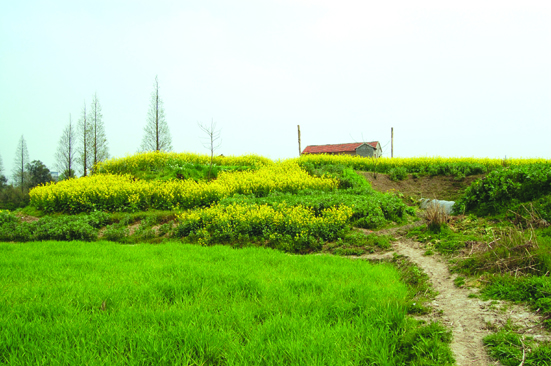

嘉兴市文物保护网 · 市级文物保护单位 · 2014-06-13 · 原文

姚家村遗址位于嘉兴市南湖区新丰镇民丰村姚家村自然村，第二次全国文物普查中发现，高墩较明显，周围为水田和民居，占地面积33000平方米。2008年底，因此处修建余云公路，浙江省考古研究所对遗址进行了抢救性发掘，出土少量良渚文化器物，并出土大量马桥文化陶器，少量青铜器，证明是新石器时代良渚文化至马桥文化时期聚落址。该遗址范围较大，延续时间长，出土文物种类丰富，具有较高的历史和科学价值。1992年公布为嘉兴市级文物保护单位。